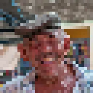

Pixelate

Ginagawang mga block na may isang kulay bawat isa ang layer, kinuha mula sa gitna ng block, sa grid na nakasentro sa layer (o sa frame gamit ang Screen Space). Hinuhubog ng Stretch, Offset at Angle ang grid at pinapadilim ng Vignette ang bawat block papunta sa mga gilid.
Ang Pixelate ay ginagawang malalaking parisukat na bloke ang larawan. Itinatakda ng Size ang laki ng bloke: 1 ay halos walang pagbabago, 500 ay ilang napakalalaking bloke. Ginagawang mas malapad o mas mataas ng Stretch ang mga bloke, iniikot ng Angle ang grid at pinapadilim ng Vignette ang bawat bloke patungo sa gilid nito. I-animate ang Size mula malaki patungo maliit para ihayag ang isang larawan, o kabaligtaran para itago ang isang bagay.
Mga Setting
| Setting | Uri | Saklaw | Default |
|---|---|---|---|
| Laki | Numero | 1 hanggang 500 | 20 |
| Stretch | Punto (X, Y) | 0.01 hanggang 100 | 1, 1 |
| Offset | Punto (X, Y) | -5000 px hanggang 5000 px | 0 px, 0 px |
| Anggulo | Anggulo | -3600° hanggang 3600° | 0° |
| Vignette | Numero | 0% hanggang 100% | 0% |
| Screen Space | Naka-on o naka-off | – | Naka-off |